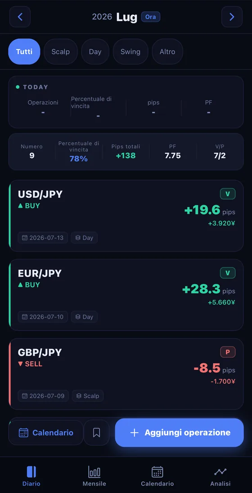
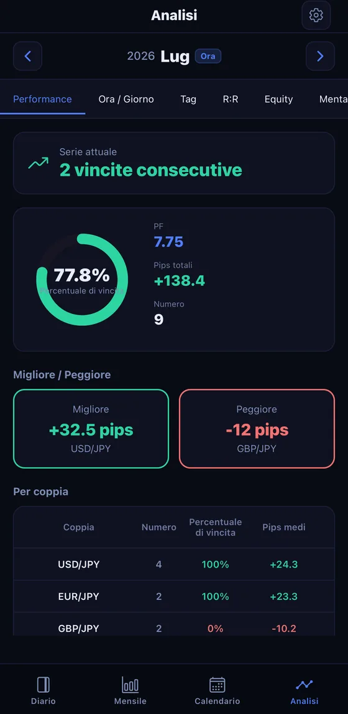
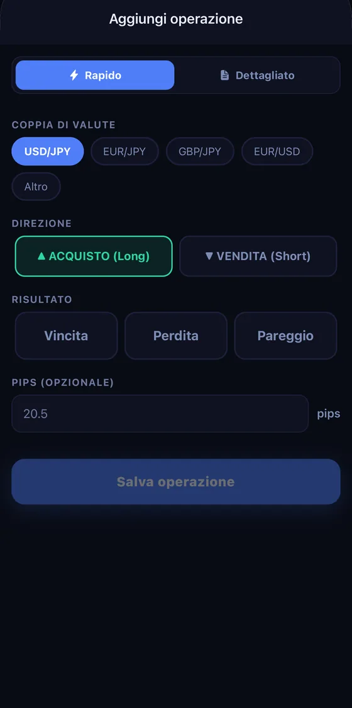

Disponibile in 16 paesi e regioni, tra cui Giappone, Stati Uniti e Svizzera. Non disponibile sull'App Store nell'UE, nel SEE e nel Regno Unito.
Coppie valutarie di esempio. Non sono dati di mercato reali.
Coppie supportate (alcune): USD/JPY, EUR/JPY, GBP/JPY, EUR/USD, AUD/JPY, USD/CHF, NZD/USD, GBP/USD e altre
App di diario di trading e analisi
Basta registrare un trade e win rate, pips e profit factor appaiono automaticamente. I tuoi risultati diventano una scheda da condividere che ti tiene motivato. Tutto funziona su smartphone o tablet.
Schermata di esempio. Non sono risultati reali.

Schermata di esempio. Non sono risultati reali.
Perché il diario non regge nel tempo
È proprio subito dopo un trade in perdita che la voglia di registrarlo sparisce di più. Un quaderno o un foglio di calcolo che richiede impegno si blocca esattamente in quel momento.
FX Trade Journal elimina la scusa "troppo complicato da scrivere" con la registrazione in un tocco e l'importazione dello storico MT4/MT5. L'analisi ha senso solo se continui a registrare.
Funzioni

Schermata di esempio. Non sono risultati reali.
Basta registrare i trade e win rate, pips e profit factor mensili vengono calcolati automaticamente. Individua schemi per orario, giorno della settimana e coppia di valute a colpo d'occhio.
Trasforma i risultati mensili in una scheda elegante e condividila su X, Instagram o LINE. Vedere i progressi accumularsi diventa la spinta per continuare.

Durante gli spostamenti o subito dopo aver chiuso un trade: basta un tocco per registrare, così puoi tenere il diario di trading usando solo smartphone o tablet.
Lo storico di trading FX è un'informazione sensibile che può rivelare la tua situazione finanziaria. Per questo crittografia e blocco biometrico sono di serie.
Schermata di esempio. Non sono risultati reali.
Sulla schermata Home il mese in corso resta sotto gli occhi. I numeri visibili sono il motivo per continuare a registrare.
Prezzi
Per prendere l'abitudine di registrare. Le funzioni principali restano gratuite per sempre.
Gratis
Per trader che vogliono analizzare seriamente la propria performance.
I prezzi mostrati sono per il Giappone (¥, tasse incluse). Il prezzo visualizzato su App Store varia in base al paese/regione. Se annulli entro i 7 giorni di prova gratuita del piano annuale, non ti verrà addebitato nulla. Al termine della prova, ti verrà addebitato automaticamente il piano annuale (JPY 5,000). Gli abbonamenti si rinnovano automaticamente e possono essere annullati fino a 24 ore prima della fine del periodo in corso dalle impostazioni del dispositivo. Per i dettagli consulta i nostri Termini di servizio e la nostra Informativa sulla privacy.
FAQ
Inizia oggi il tuo bilancio, a partire dal prossimo trade.